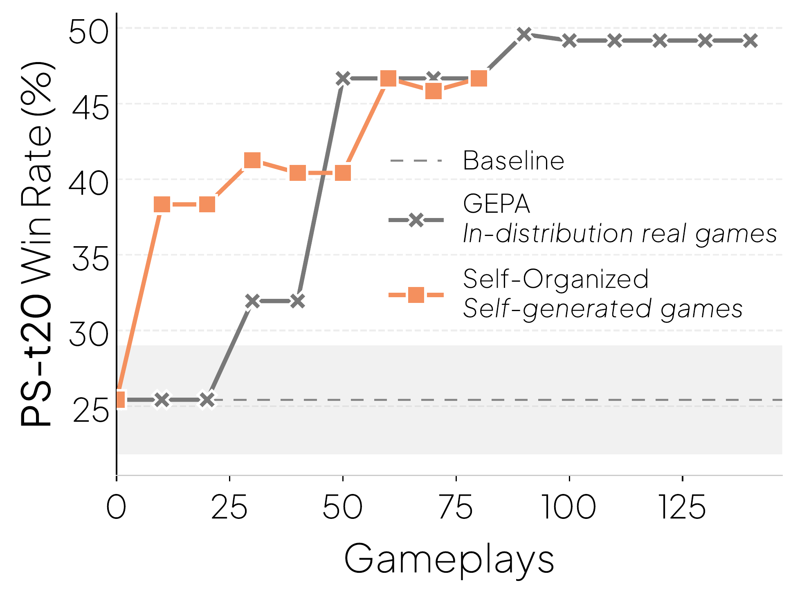
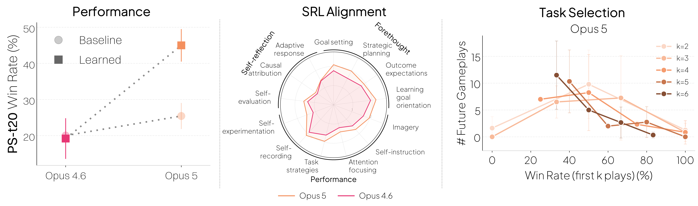
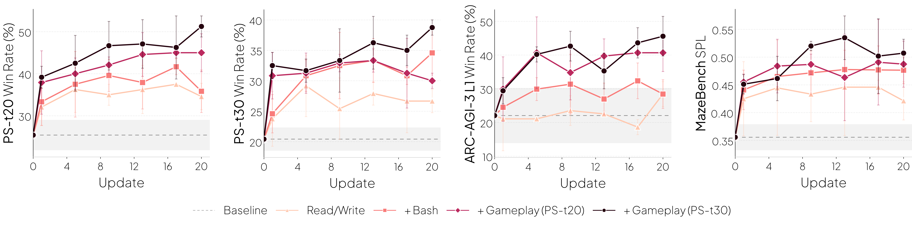

Imagine giving an agent a computer, and asking it to improve its ability to play puzzle games. What will it do? Let's say the computer has no pre-installed games; the agent must write its own games if it wants to practice. It must decide what sorts of games to try, which lessons to retain, and how to measure its progress.
These decisions on the design of learning procedures are still usually made by human researchers, even as individual components are increasingly automated by agents. In our new paper, we ask:
We study the natural behavior of LLM agents when they are given primitive tools for self-improving via context manipulation, but no explicit recipe for using them.
Teacher-Player setup
Our testbed setting is puzzle games: A player agent plays a turn-based game with limited knowledge of the mechanics and objective. To do well it has to explore efficiently and plan ahead. The player is a coding agent that improves through writing skill files and manipulating its context.
We put a teacher agent into a controlled, sandboxed harness session and give it three things:
- Tools: Read/Write (file-editing), Bash (running terminal programs), and Gameplay. The Gameplay tool spins up a fresh player session given a teacher-written game source file and player context, and returns the score and transcript.
- Budget: An update budget for revising player text files, and a gameplay budget.
- Goal: A main goal to improve the player by optimizing its text, and a generalizability goal that the text should transfer to unseen games.
Then, we let the teacher session run until one of the budgets is exhausted. To evaluate, we measure how well the optimized prompt/skill-files transfer to external, human-written game benchmarks.
Formal Setup
Let \(\pi\) be an LLM with frozen weights \(\theta\). The player \(\pi_{player}\) has context \(c = (c_P, c_L)\), where \(c_P\) is the player prompt and \(c_L\) is auxiliary text files (e.g., skill files). The teacher \(\pi_{teacher}\) is another instance of the same LLM that modifies \(c\). An update is a single edit tool-call to one file in \(c\).
The teacher's "algorithm" is just to act in its sandbox until the budget runs out:
- \(S \gets \text{InitSandbox}(c_0, I, B)\)
- \(\mathcal{A}_T \gets \{\text{Read}, \text{Write}, \text{Bash}, \text{Gameplay}\}\)
- while \(B > 0\) do
- \(a \sim \pi_{teacher}(\cdot \mid S), \; a \in \mathcal{A}_T\) ▷ teacher picks its next action
- \(S \gets \text{Execute}(S, a)\) ▷ may consume budget
- end while
- return \(c_{final}\)
We evaluate a context \(c\) by the player's performance on a held-out test set of games, where each game is played in a fresh player session at a fixed horizon and token budget:
and measure self-improvement as \(J(c_{final}) - J(c_0) > 0\).
Motivating observation: Comparison to GEPA
Using Claude Opus-5, self-organized learning in a data-free setting achieves comparable performance to a prescribed loop (GEPA) that hill-climbs on 20 real, in-distribution games. This tells us that a strong model composing its own games and learning procedure can roughly match the performance of a text optimizer that uses real data.

Self-improving agents use recognizable learning strategies
Across three families of models (Claude, GPT, and GLM), recently released model generations self-improve, while older generations do not.
Newer models that self-improve also demonstrate human-recognizable learning strategies. They align more strongly to behaviors in Zimmerman's cyclical phases model for self-regulated learning, and spend most of their gameplay effort on low-to-medium difficulty games. See the paper for more analysis of teacher behaviors!

Explore teacher sessions
You can explore teacher sessions below. Some interesting moments:
- Increasing difficulty. After the unmodified player wins its first games easily, Opus-5 concludes the tests are "too easy" to tell whether its notes help.
- Building tools to tune difficulty. Opus-5 writes a Sokoban solver and generates random searches for levels whose optimal solution is exactly 17–18 moves.
- Generating train/test splits. GPT 6-Astra writes a procedural game generator and re-runs it with a new random seed to make a separate "hold" set.
- Stress-testing notes. Opus-5 worries that its "never idle" rule could backfire, so it builds a game that requires waiting.
Self-optimized text generalizes
Using Claude Opus-5, we show that the same artifacts generalize across game benchmarks that capture different game horizons, engines, mechanics, and state representations (2D v. 3D). In the paper we also evaluate transfer across models, and how the teacher's initial information affects generalization.

Implications
These results reflect a basic trend in deep learning: As models become more capable, they require fewer human inductive biases and less surrounding scaffolding. Put simply, stronger models require weaker harnesses. Here, that scaffolding is the self-improvement loop itself.
The main implications are in two directions:
- Capability over time: The agents that self-improve in our experiments need less scaffolding than older generations of agents, but still benefit from an explicitly provided Gameplay tool. The next generation may require even less.
- Safety: In our controlled, short-horizon setting, an agent with the right tools self-improves even without an explicitly provided recipe. As this capability improves, scientifically understanding it and characterizing model behavior becomes increasingly important.
Many interesting open questions remain:
- Do these trends extend beyond games to more open-ended domains where models have weaker priors?
- Are there other, less human-interpretable behaviors that shape agent self-improvement, and how do we characterize them?
- Do models acting as "learned optimizers" exhibit similar convergence properties as traditional learning algorithms?